Canvas 基础讲义
基本篇
什么是 Canvas
canvas 是 HTML5 提供的一个用于展示绘图效果的标签. canvas 原意画布, 帆布. 在 HTML 页面中用于展示绘图效果. 最早 canvas 是苹果提出的一个方案, 今天已经在大多数浏览器中实现.
canvas 英 ['kænvəs] 美 ['kænvəs] 帆布 画布
canvas 的基本用法
基本语法
<canvas></canvas>
- 使用 canvas 标签, 即可在页面中开辟一格区域. 可以设置其 width 和 height 设置该区域的尺寸.
- 默认 canvas 的宽高为 300 和 150.
- 不要使用 CSS 的方式设置宽高, 应该使用 HTML 属性.
- 如果浏览器不支持 canvas 标签, 那么就会将其解释为 div 标签. 因此常常在 canvas 中嵌入文本, 以提示用户浏览器的能力.
- canvas 的兼容性非常强, 只要支持该标签的, 基本功能都一样, 因此不用考虑兼容性问题.
- canvas 本身不能绘图. 是使用 JavaScript 来完成绘图. canvas 对象提供了各种绘图用的 api.
canvas 的使用领域
canvas 的使用领域很多:
- 游戏
- 可视化数据(重点)
- banner 广告
- 多媒体
- 未来
- 模拟仿真
- 远程操作
- 图形编辑
我们的课程目标
- 不是为了做游戏
- 学会使用基本的 canvas api, 使用 canvas 可以完成简单的绘图
- 实现数据的可视化
基本绘图
基本绘图方法
绘图步骤
- 获得
canvas对象. - 调用
getContext方法, 提供字符串参数'2d'. - 该方法返回
CanvasRenderingContext2D类型的对象. 该对象提供基本的绘图命令. - 使用
CanvasRenderingContext2D对象提供的方法进行绘图. - 基本绘图命令
- 设置开始绘图的位置:
context.moveTo( x, y ). - 设置直线到的位置:
context.lineTo( x, y ). - 描边绘制:
context.stroke(). - 填充绘制:
context.fill(). - 闭合路径:
context.closePath().
- 设置开始绘图的位置:
01-绘制基本线
var canvas = document.createElement( 'canvas' );
canvas.width = 500;
canvas.height = 400;
canvas.style.border = '1px dashed red';
document.body.appendChild( canvas );
// 获得 CanvasRenderingContext2D 对象
var context = canvas.getContext( '2d' );
// 设置 起点
context.moveTo( 0, 0 );
// 绘制直线
context.lineTo( 500, 400 );
// 设置 起点
context.moveTo( 0, 400 );
// 绘制直线
context.lineTo( 500, 0 );
// 描边显示效果
context.stroke();
运行结果为

计算机直角坐标系
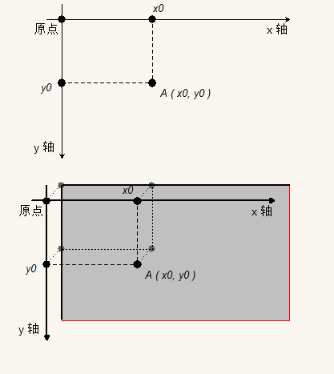
代码分析
- 需要绘图就需要有
canvas标签, 该标签用于展示图像. canvas的宽高不要使用 CSS 来设置, 会有拉伸的问题. 应该直接使用属性设置.- 但是
canvas只是展示图像的标签, 它没有绘图的能力. 需要使用canvas的上下文工具来实现绘图. - 使用
canvas.getContext( '2d' )可以获得绘图工具, 该工具是CanvasRenderingContext2D类型的对象. - 需要绘图, 首选设置绘图的起点.
- 使用
canvas绘图, 需要主要的是他主张先描点, 再连线绘制效果. - 因此需要首先设置起点, 然后在起点的基础上描述其他需要的点.
- 使用
CanvasRenderingContext2D.moveTo( x, y )方法设置起点.- 其中 x, y 表示的是在坐标系中的位置.
- 使用
- 使用
CanvasRenderingContext2D.lineTo( x, y )来描述绘制直线的下一个点. 依次类推可以描述多个点. - 描点结束后, 需要使用
CanvasRenderingContext2D.stroke()方法来连线. 开可以显示出效果.
getContext 方法
语法: Canvas.getContext( typeStr )
描述:
- 该方法用于绘制上下文工具.
- 如果是绘制平面图形使用
'2d'作为参数, 如果绘制立体图形使用'webgl'. - 使用
'2d'返回CanvasRenderingContext2D类型的对象. - 使用
'webgl'返回WebGLRenderingContext类型的对象.
moveTo 方法
语法: CanvasRenderingContext2D.moveTo( x, y )
描述:
- 该方法用于设置绘制起点.
- 其中参数 x, y 表示在坐标系中的位置, 分别是 x 坐标与 y 坐标.
lineTo 方法
语法: CanvasRenderingContext2D.lineTo( x, y )
描述:
- 该方法用于设置需要绘制直线的另一个点. 最终描边后会连线当前点和方法参数描述的点.
- 其中参数 x, y 表示在坐标系中的位置, 分别是 x 坐标与 y 坐标.
stroke 方法
语法: CanvasRenderingContext2D.stroke()
描述: 该方法用于连线, 将描述的所有点按照指定顺序连接起来.
结论
- 绘图先要获得上下文, 即绘图工具
- 绘图需要设置开始的坐标
- 绘图是先描点, 然后一个一个依次连线
- 依次绘图只能绘制单一样式( 色彩等 )
直线图形
分别绘制下面的案例:
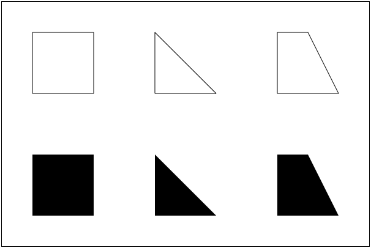
- 绘制直线计算坐标.
- 描边调用
CanvasRenderingContext2D.stroke()方法. - 填充使用
CanvasRenderingContext2D.fill()方法.
fill 方法
语法: CanvasRenderingContext2D.fill()
描述: 该方法会按照描绘的点的路径来填充图形. 默认是黑色.
非零环绕原则
绘制下面的图
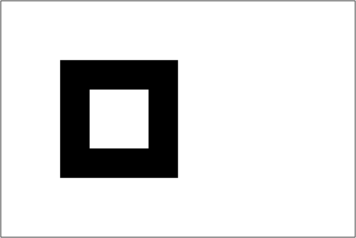
填充满足非零环绕数原则
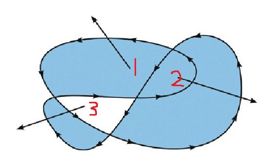
说明:
- 在
canvas中使用各种方法描点实际上描述的是一个称为路径( path )的东西. - 在
canvas绘图中, 所有描述的东西都是路径, 只有最后填充或描边的时候才会显示出效果. - 每一个路径都是一个状态.
练习: 绘制下面图形
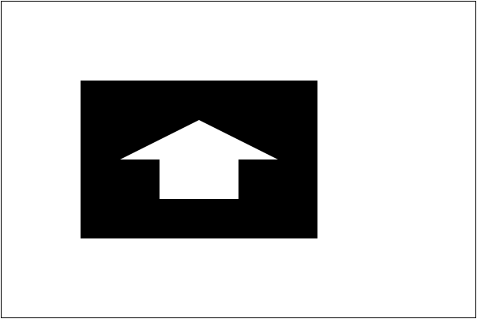
闭合路径
closePath 方法
语法: CanvasRenderingContext2D.closePath()
描述: 使用该方法可以将最后一个描点与最开始的描点自动连接起来.
案例
...
ctx.moveTo( 100, 100 );
ctx.lineTo( 300, 100 );
ctx.lineTo( 300, 200 );
ctx.closePath();
ctx.stroke();
结果为:

练习: 使用 closePath 改写非零环绕的案例.
路径的概念
- 路径就是一次绘图
- 类比使用油漆刷墙面
- 首先打底色, 绝对不会一次性使用多个色彩
- 一定是先画完某一个色彩再考虑另一个色彩
- 除非需要自己创作才会考虑墙面绘画
- 路径就好比一桶油漆和一把刷子, 一次性描点绘制. 如果重新更换油漆, 那么是绘制另一个区域.
- 如果需要开启新的绘制, 那么使用
CanvasRenderingContext2D.beginPath()方法.
墙面油漆图示


示例
如果需要在一个区域内绘制描边的图形和填充的图形. 例如
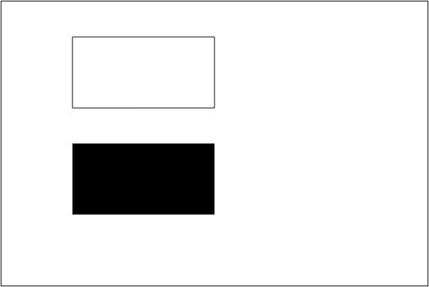
线型相关属性
设置描边与填充不一定只能使用黑色的细线. 可以利用一些属性设置其效果
CanvasRenderingContext2D.lineWidth设置线宽.CanvasRenderingContext2D.lineCap设置线末端类型.CanvasRenderingContext2D.lineJoin设置相交线的拐点.CanvasRenderingContext2D.getLineDash()获得线段样式数组.CanvasRenderingContext2D.setLineDash()设置线段样式.CanvasRenderingContext2D.lineDashOffset绘制线段偏移量.
设置线宽
语法: CanvasRenderingContext2D.lineWidth = number
描述: 设置线宽.
案例
...
ctx.moveTo( 100, 100 );
ctx.lineTo( 300, 100 );
ctx.stroke();
ctx.beginPath();
ctx.lineWidth = 10;
ctx.moveTo( 100, 250 );
ctx.lineTo( 300, 250 );
ctx.stroke();
效果

设置线末端类型
语法: CanvasRenderingContext2D.lineCap = value
描述:
- 设置线型末端的样式, 可取值为: 'butt'( 默认 ), 'round', 'square'.
- 'butt' 表示两端使用方形结束.
- 'round' 表示两端使用圆角结束.
- 'square' 表示突出的圆角结束.
案例
...
ctx.lineWidth = 10;
ctx.moveTo( 100, 100 );
ctx.lineTo( 300, 100 );
ctx.stroke();
ctx.beginPath();
ctx.lineCap = 'round';
ctx.moveTo( 100, 130 );
ctx.lineTo( 300, 130 );
ctx.stroke();
ctx.beginPath();
ctx.lineCap = 'square';
ctx.moveTo( 100, 160 );
ctx.lineTo( 300, 160 );
ctx.stroke();
效果

设置相交线的拐点
语法: CanvasRenderingContext2D.lineJoin = value
描述:
- 设置两条直线的拐点描述方式. 可以取值 'round', 'bevel', 'miter'(默认)
- 'round' 使用圆角连接.
- 'bevel' 使用平切连接.
- 'miter' 使用直角转.
案例
...
ctx.lineWidth = 10;
ctx.lineJoin = 'round';
ctx.moveTo( 100, 100 );
ctx.lineTo( 200, 200 );
ctx.lineTo( 300, 100 );
ctx.stroke();
ctx.beginPath();
ctx.lineJoin = 'bevel';
ctx.moveTo( 100, 150 );
ctx.lineTo( 200, 250 );
ctx.lineTo( 300, 150 );
ctx.stroke();
ctx.beginPath();
ctx.lineJoin = 'miter';
ctx.moveTo( 100, 200 );
ctx.lineTo( 200, 300 );
ctx.lineTo( 300, 200 );
ctx.stroke();
效果

虚线
语法:
CanvasRenderingContext2D.lineDashOffset = numberCanvasRenderingContext2D.getLineDash()CanvasRenderingContext2D.setLineDash()
描述:
- setLineDash 用于设置开始绘制虚线的偏移量. 数字的正负表示左右偏移.
- getLineDash() 与 setLineDash() 方法使用数组描述实线与虚线的长度.
演示
...
ctx.moveTo( 100, 90 );
ctx.lineTo( 100, 110 );
ctx.moveTo( 300, 90 );
ctx.lineTo( 300, 110 );
ctx.moveTo( 100, 140 );
ctx.lineTo( 100, 160 );
ctx.moveTo( 300, 140 );
ctx.lineTo( 300, 160 );
ctx.moveTo( 100, 190 );
ctx.lineTo( 100, 210 );
ctx.moveTo( 300, 190 );
ctx.lineTo( 300, 210 );
ctx.stroke();
ctx.beginPath();
ctx.moveTo( 100, 100 );
ctx.lineTo( 300, 100 );
ctx.stroke();
ctx.beginPath();
ctx.setLineDash( [ 5, 5 ] );
ctx.moveTo( 100, 150 );
ctx.lineTo( 300, 150 );
ctx.stroke();
ctx.beginPath();
ctx.lineDashOffset = -2;
ctx.moveTo( 100, 200 );
ctx.lineTo( 300, 200 );
ctx.stroke();
效果

填充与描边样式
语法:
CanvasRenderingContext2D.strokeStyle = valueCanvasRenderingContext2D.fillStyle = value
描述:
- strokeStyle 可以设置描边颜色, 与 CSS 的语法一样
- fillStyle 设置填充颜色, 与 CSS 语法一样
- 这两个属性还可以设置渐变对象.
案例
for (var i=0;i<6;i++){
for (var j=0;j<6;j++){
ctx.strokeStyle = 'rgb(0,' + Math.floor(255-42.5*i) + ',' +
Math.floor(255-42.5*j) + ')';
ctx.beginPath();
ctx.arc(12.5+j*25,12.5+i*25,10,0,Math.PI*2,true);
ctx.stroke();
}
}
效果

实例练习
绘制坐标网格
绘制下面的效果
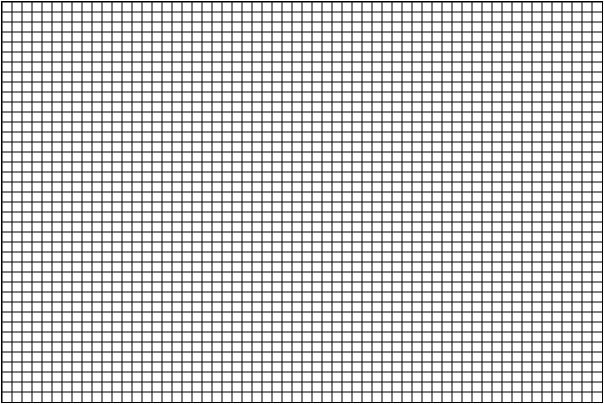
绘制坐标系
绘制下面的效果

绘制坐标点
绘制下面的效果
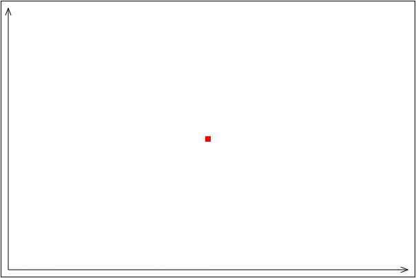
绘制折线图
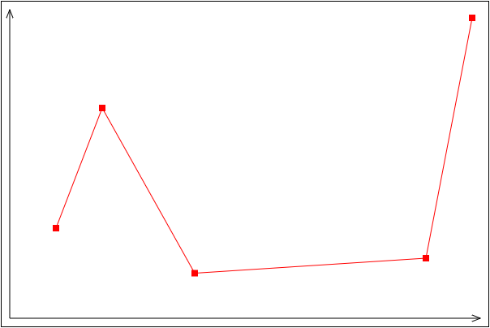
中级篇
绘制形状
绘制图形不仅仅是利用线条来实现绘图, 还可以有快捷的绘制图形的办法
- 绘制矩形
- 绘制圆弧
绘制矩形
绘制矩形的方法
CanvasRenderingContext2D.strokeRectCanvasRenderingContext2D.fillRectCanvasRenderingContext2D.rect
注意: rect 方法就是矩形路径, 还需要使用 fill 或 stroke 才可以看到效果.
因此一般使用 strokeRect 或 fillRect 直接可以看到结果.
清除矩形区域
CanvasRenderingContext2D.clearRect
绘制矩形框
语法: CanvasRenderingContext2D.strokeRect( x, y, width. height )
描述:
- 用来绘制一个矩形. 比起直接使用
moveTo和lineTo方法要简单许多. - 该方法的前两个参数表示绘制矩形的左上角的坐标. 后两个参数表示这个矩形的宽高.
- 使用该方法不需要使用
moveTo方法设置起始点, 也不需要调用stroke等绘画方法. - 绘制的矩形支持
strokeStyle设置颜色样式.
案例
...
ctx.strokeStyle = 'red';
ctx.strokeRect( 100, 100, 200, 100 );
效果
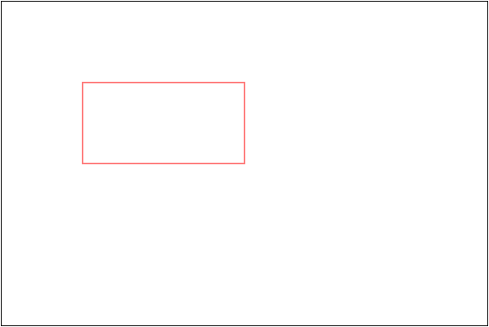
绘制填充矩形
语法: CanvasRenderingContext2D.fillRect( x, y, width. height )
描述:
- 用来绘制一个矩形. 比起直接使用
moveTo和lineTo方法要简单许多. - 该方法的前两个参数表示绘制矩形的左上角的坐标. 后两个参数表示这个矩形的宽高.
- 使用该方法不需要使用
moveTo方法设置起始点, 也不需要调用stroke等绘画方法. - 绘制的矩形支持
fillStyle设置颜色样式.
案例
...
ctx.fillStyle = 'green';
ctx.fillRect( 100, 100, 200, 100 );
效果

清除矩形区域
语法: CanvasRenderingContext2D.clearRect( x, y, width, height )
描述:
- 用于清除画布中的矩形区域的内容.
- 参数 x, y 表示矩形区域左上角的坐标, width 与 height 表示矩形区域的宽高.
案例
...
ctx.fillRect( 100, 100, 200, 100 );
ctx.clearRect( 110, 110, 50, 50 );
效果
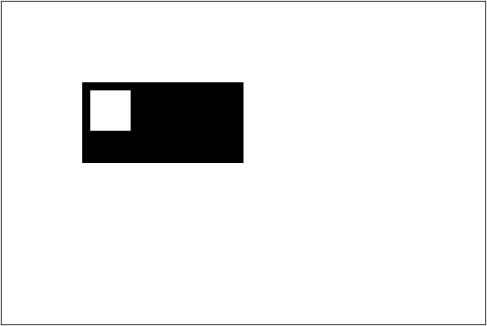
案例
利用绘制图形与清除矩形区域, 可以实现简单的动画. 例如代码:
...
var x = 10, y = 10, oldx = 10, oldy = 10;
var width = 100, height = 50;
var intervalId = setInterval(function () {
ctx.clearRect( oldx - 1, oldy - 1, width + 2, height + 2 );
ctx.strokeRect( x, y, width, height );
oldx = x;
oldy = y;
x += 4;
y += 2;
if ( oldy >= 200 ) {
// clearInterval( intervalId );
x = 10, y = 10;
}
}, 20);
简单效果
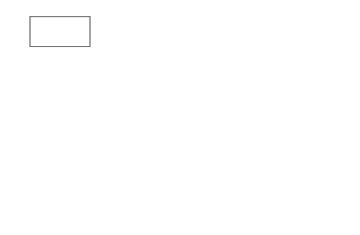
有时为了简单常常将整个画布都清除, 这样就不用每次计算清除的问题.
ctx.clearRect( 0, 0, cas.width, cas.height );
// 也可以设置画布宽度, 这样就会自动清除
cas.width = cas.width;
绘制圆弧
绘制圆弧的方法有
CanvasRenderingContext2D.arc()CanvasRenderingContext2D.arcTo()
绘制圆弧
语法: CanvasRenderingContext2D.arc( x, y, radius. startAngle. endAngle, anticlockwise )
描述:
- 该方法用于绘制一段弧, 配合开始点的位置 与
stroke方法或fill方法可以绘制扇形. - 方法中的前两个参数 x, y 表示绘制圆弧的圆心坐标.
- 参数 radius 表示圆弧半径, 单位为弧度.
- 参数 startAngle 与 endAngle 表示开始到结束的角度. 角度以水平向右为 0 弧度, 顺时针为正方向.
- 参数 anticlockwise 表示是否采用默认的正向角度, 如果传入 true 表示逆指针为正. 该参数可选.
案例
// 在 200, 200 的地方绘制一段半径为 100 的圆弧, 圆心角为 - PI / 2 到 PI / 4
...
ctx.arc( 200, 200, 100, -Math.PI/2, Math.PI/4 );
ctx.stroke();
// 为了方便看清楚结构, 绘制坐标轴
ctx.beginPath();
ctx.strokeStyle = 'red';
ctx.moveTo( 50, 200 );
ctx.lineTo( 350, 200 );
ctx.moveTo( 200, 50 );
ctx.lineTo( 200, 350 );
ctx.moveTo( 200, 200 );
ctx.lineTo( 300, 300 );
ctx.stroke();
效果
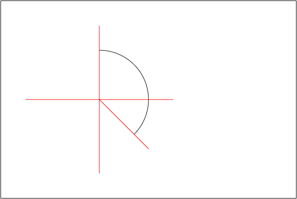
注意事项
- 使用 arc 绘图的时候, 如果没有设置
moveTo那么会从开始的绘弧的地方作为起始点. 如果设置了moveTo, 那么会连线该点与圆弧的起点. - 如果使用
stroke方法, 那么会从开始连线到圆弧的起始位置. 如果是fill方法, 会自动闭合路径填充.
例如
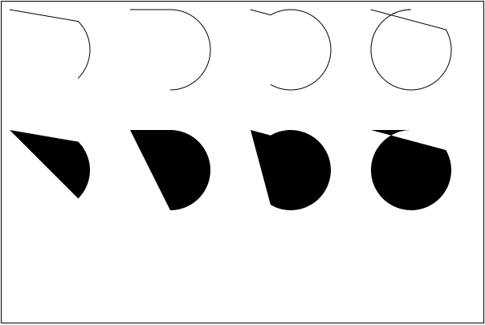
绘制扇形
绘制扇形的重点是需要设置起始位置为圆心点, 然后闭合路径即可
...
ctx.strokeStyle = 'red';
ctx.fillStyle = 'pink';
ctx.moveTo( 100, 200 );
ctx.arc( 100, 200, 100, -Math.PI/3, Math.PI/3 );
ctx.closePath();
ctx.stroke();
ctx.beginPath();
ctx.moveTo( 300, 200 );
ctx.arc( 300, 200, 100, -Math.PI/3, Math.PI/3 );
ctx.closePath();
ctx.fill();
效果
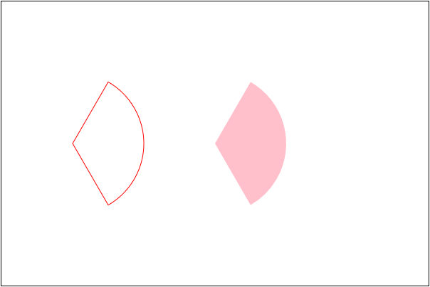
绘制扇形动画
绘制扇形动画, 就是每隔几毫秒( 20 毫秒)擦除以前绘制的内容, 然后在以前绘制的基础上比以前多绘制一点东西.
这里多绘制的内容就是由角度决定. 比如一开始角度从 -Math.PI / 2 开始绘制. 那么每次角度都 +0.1,
直到 绘制到 Math.PI * 3 / 2 为止.
...
ctx.fillStyle = 'green';
var startAngle = -Math.PI / 2,
angle = startAngle,
x = 200, y = 200,
r = 100;
var intervalId = setInterval(function () {
// 清除之前绘制的内容
ctx.clearRect( 0, 0, cas.width, cas.height );
// 角度增量
angle += 0.1;
// 判断是否停止计时器
if ( angle >= Math.PI * 3 / 2 ) {
clearInterval( intervalId);
angle = Math.PI * 3 / 2;
console.log( '绘制完成' );
}
// 绘制
ctx.moveTo( x, y );
ctx.arc( x, y, r, startAngle, angle );
ctx.fill();
}, 20);
效果
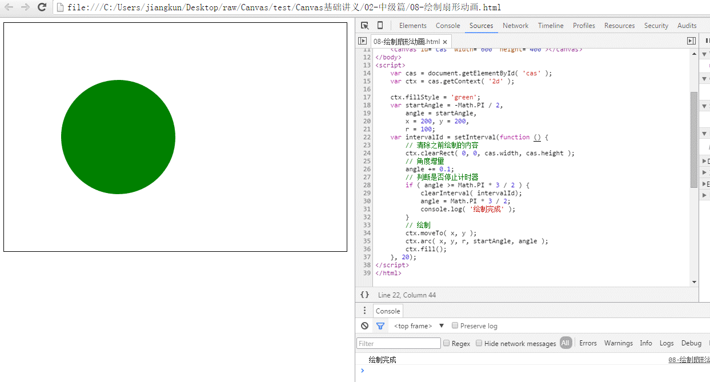
绘制饼形图
绘制饼形图最大的特点是角度是叠加的. 开始从 -Math.PI/2 开始绘制, 达到执行角 x 后, 下一个区域从 x 开始绘制,
然后有到一个角 y 停下来. 如此反复到 Math.PI * 3 / 2 结束.
本节看两个案例, 一个固定等分, 一个由数据源来定义角度.
三等分饼形图
绘制一个三等分的饼形图, 颜色使用 红, 绿, 蓝.
var x = 200, y = 200,
r = 100,
step = Math.PI * 2 / 3, // 120 度一个区域
start = -Math.PI / 2, // 起始角度
colors = [ 'red', 'green', 'blue' ];
for ( var i = 0; i < 3; i++ ) {
ctx.beginPath();
ctx.moveTo( x, y );
ctx.fillStyle = colors[ i ];
ctx.arc( x, y, r, start, start+=step );
ctx.fill();
}
效果
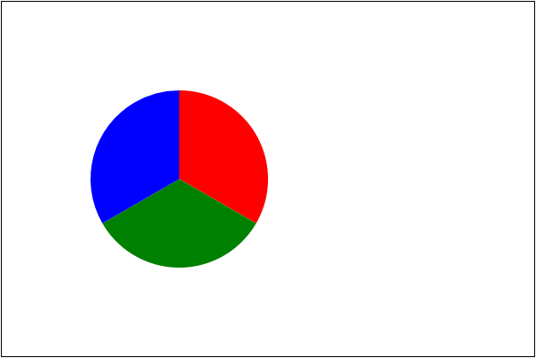
根据数据定义角度
根据数据源定义角度, 就是将所有的数据求和, 按照总和为 2 * Math.PI 的结论计算出每一个数据部分的弧度值.
同时颜色可以提前定义好.
从 Konva 库中分离出来的颜色
var colors =
( "aliceblue,antiquewhite,aqua,aquamarine,azure,beige,bisque,black,blanchedalmond,blue," +
"blueviolet,brown,burlywood,cadetblue,chartreuse,chocolate,coral,cornflowerblue,cornsilk," +
"crimson,cyan,darkblue,darkcyan,darkgoldenrod,darkgray,darkgreen,darkgrey,darkkhaki,darkmagenta," +
"darkolivegreen,darkorange,darkorchid,darkred,darksalmon,darkseagreen,darkslateblue,darkslategray," +
"darkslategrey,darkturquoise,darkviolet,deeppink,deepskyblue,dimgray,dimgrey,dodgerblue,firebrick," +
"floralwhite,forestgreen,fuchsia,gainsboro,ghostwhite,gold,goldenrod,gray,green,greenyellow,grey," +
"honeydew,hotpink,indianred,indigo,ivory,khaki,lavender,lavenderblush,lawngreen,lemonchiffon," +
"lightblue,lightcoral,lightcyan,lightgoldenrodyellow,lightgray,lightgreen,lightgrey,lightpink," +
"lightsalmon,lightseagreen,lightskyblue,lightslategray,lightslategrey,lightsteelblue,lightyellow," +
"lime,limegreen,linen,magenta,maroon,mediumaquamarine,mediumblue,mediumorchid,mediumpurple," +
"mediumseagreen,mediumslateblue,mediumspringgreen,mediumturquoise,mediumvioletred,midnightblue," +
"mintcream,mistyrose,moccasin,navajowhite,navy,oldlace,olive,olivedrab,orange,orangered,orchid," +
"palegoldenrod,palegreen,paleturquoise,palevioletred,papayawhip,peachpuff,peru,pink,plum,powderblue," +
"purple,rebeccapurple,red,rosybrown,royalblue,saddlebrown,salmon,sandybrown,seagreen,seashell,sienna," +
"silver,skyblue,slateblue,slategray,slategrey,snow,springgreen,steelblue,tan,teal,thistle,transparent," +
"tomato,turquoise,violet,wheat,white,whitesmoke,yellow,yellowgreen" ).split( ',' );
如果得到数据
var data = [ 123, 156, 47, 100, 80 ];
那么计算各个部分的比例时, 可以构造一个存储分量值与弧度的对象数组.
var sum = 0;
for ( var i = 0; i < data.length; i++ ) {
sum += data[ i ];
}
// 得到总数后, 分量比就有了
var odata = data.map(function ( v, i ) {
return { value: v, radius: v * 2 * Math.PI / sum };
});
最后根据数据开始绘图
// 开始绘图
var start = -Math.PI / 2,
x = 200, y = 200,
r = 100;
for ( var i = 0; i < odata.length; i++ ) {
ctx.beginPath();
ctx.fillStyle = colors[ i + 10 ];
ctx.moveTo( x, y );
ctx.arc( x, y, r, start, start+=odata[ i ][ 'radius' ] );
ctx.fill();
}
效果

绘制相切弧
语法: CanvasRenderingContext2D.arcTo( x1, y1, x2, y2, radius )
描述:
- 该方法用于绘制圆弧
- 绘制的规则是当前位置与第一个参考点连线, 绘制的弧与该直线相切.
- 同时连接两个参考点, 圆弧根据半径与该连线相切
例如有一个起始点 ( 100, 100 ), 那么绘制其点. 颜色设置为红色.
ctx.fillStyle = 'red';
ctx.fillRect( 100 - 4, 100 - 4, 8, 8 );
然后两个参考点分别为 ( 100, 300 ) 和 ( 300, 300 ), 绘制出该点
ctx.fillRect( 100 - 4, 300 - 4, 8, 8 );
ctx.fillRect( 300 - 4, 300 - 4, 8, 8 );
连接两个参考点
ctx.beginPath();
ctx.strokeStyle = 'red';
ctx.moveTo( 100, 300 );
ctx.lineTo( 300, 300 );
ctx.stroke();
得到效果为

调用 arcTo 方法绘制圆弧. 记得将起始点设置为 ( 100, 100 )
ctx.beginPath();
ctx.strokeStyle = 'blue';
ctx.moveTo( 100, 100 );
ctx.arcTo( 100, 300, 300, 300, 100 );
ctx.stroke();
得到效果
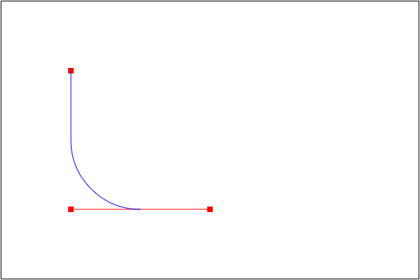
注意: 使用该方法可以使用圆弧连接两条直线, 而不用计算复杂的起始角度与结束角度. 因此用于绘制圆角矩形等案例较多.
绘制圆角矩形
封装一个函数, 用于绘制圆角矩形.
- 参考
rect方法, 需要坐标参数 x, y. - 由于设置圆角, 因此需要设置圆角半径 cornerRadius.
- 还需要提供宽高.
首先绘制一个矩形边框. 但是需要考虑圆角, 虽然从 x, y 开始绘制, 但是中间要空出 半径的距离.
var x = 100, y = 100, width = 300, height = 100,
cornerRadius = 10;
ctx.strokeStyle = 'red';
ctx.moveTo( x + cornerRadius, y );
ctx.lineTo( x + width - cornerRadius, y );
ctx.moveTo( x + width, y + cornerRadius );
ctx.lineTo( x + width, y + height - cornerRadius );
ctx.moveTo( x + width - cornerRadius, y + height );
ctx.lineTo( x + cornerRadius, y + height );
ctx.moveTo( x, y + height - cornerRadius );
ctx.lineTo( x, y + cornerRadius );
ctx.stroke();
效果为
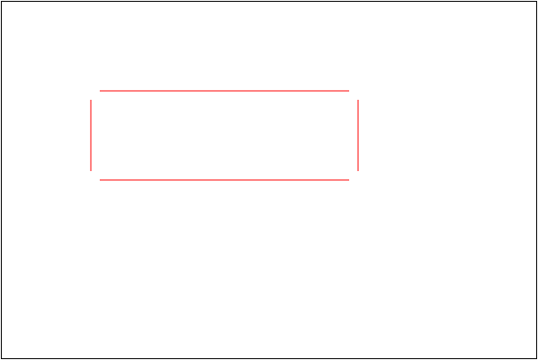
然后再分别绘制四个角, 设置当前位置与参考点的位置. 设置当前位置为一个线端点, 然后参考点依次就是 矩形顶点 和 另一个线段的端点.
ctx.moveTo( x + cornerRadius, y );
ctx.arcTo( x, y, x, y + cornerRadius, cornerRadius );
即可得到
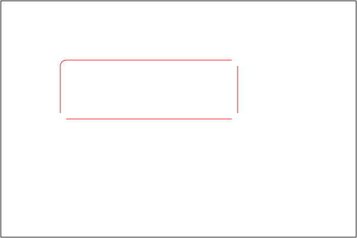
同理绘制另外三个圆角
ctx.moveTo( x + width - cornerRadius, y );
ctx.arcTo( x + width, y, x + width, y + cornerRadius, cornerRadius );
ctx.moveTo( x + width, y + height - cornerRadius );
ctx.arcTo( x + width, y + height, x + width - cornerRadius, y + height, cornerRadius );
ctx.moveTo( x + cornerRadius, y + height );
ctx.arcTo( x, y + height, x, y + height - cornerRadius, cornerRadius );
即可得到
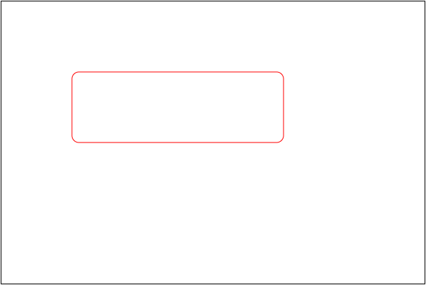
封装成方法就可以绘制更多圆角矩形了. 封装中注意 beginPath() 和 save() 和 restore()
function cRect ( x, y, width, height, cornerRadius, color ) {
ctx.save();
ctx.beginPath();
ctx.strokeStyle = color || 'red';
ctx.moveTo( x + cornerRadius, y );
ctx.lineTo( x + width - cornerRadius, y );
ctx.moveTo( x + width, y + cornerRadius );
ctx.lineTo( x + width, y + height - cornerRadius );
ctx.moveTo( x + width - cornerRadius, y + height );
ctx.lineTo( x + cornerRadius, y + height );
ctx.moveTo( x, y + height - cornerRadius );
ctx.lineTo( x, y + cornerRadius );
// 开始绘制四个圆角
ctx.moveTo( x + cornerRadius, y );
ctx.arcTo( x, y, x, y + cornerRadius, cornerRadius );
ctx.moveTo( x + width - cornerRadius, y );
ctx.arcTo( x + width, y, x + width, y + cornerRadius, cornerRadius );
ctx.moveTo( x + width, y + height - cornerRadius );
ctx.arcTo( x + width, y + height, x + width - cornerRadius, y + height, cornerRadius );
ctx.moveTo( x + cornerRadius, y + height );
ctx.arcTo( x, y + height, x, y + height - cornerRadius, cornerRadius );
ctx.stroke();
ctx.restore();
}
调用代码
cRect( 50, 50, 100, 50, 5 );
cRect( 100, 120, 100, 80, 8, 'blue' );
cRect( 300, 100, 200, 100, 10, 'green' );
得到结果为

绘制文本
绘制文本的方法
CanvasRenderingContext2D.fillText()CanvasRenderingContext2D.strokeText()CanvasRenderingContext2D.measureText()
文本样式
CanvasRenderingContext2D.fontCanvasRenderingContext2D.textAlignCanvasRenderingContext2D.textBaseline
绘制文字
语法:
CanvasRenderingContext2D.strokeText( text, x, y[, maxWidth] )CanvasRenderingContext2D.fillText( text, x, y[, maxWidth] )
描述:
- 这两个方法的功能都是在给定的 x, y 坐标下绘制文本内容.
- stroke 绘制描边文字, 文字内空心. fill 绘制填充文字, 即实心文字.
- 最后一个参数可选, 用于限制文字的总宽. 特殊条件下, 系统会自动调整文字宽度与大小以适应该参数限制.
案例
...
ctx.strokeRect( 100, 100, 200, 50 );
ctx.strokeText( 'Hello JK', 100, 100 );
ctx.strokeRect( 100, 200, 200, 50 );
ctx.fillText( 'Hello JK', 100, 200 );
效果

注意: 第一个文字由于中间空心, 所以文字相当于双线显示. 就显得较粗.
根据绘制的矩形块可以发现文字几乎使用该点作为文字基线参考.
计算文本尺寸
语法: CanvasRenderingContext2D.measureText()
描述:
- 该方法返回一个文本尺寸对象, TextMetrics 对象.
- TextMetrics 对象属性很多, 常用的 width 属性可以获取文字的宽度.
设置文字属性
设置文字字体
语法: CanvasRenderingContext2D.font = value
描述:
- 该属性用于设置绘制字体的各种信息, 与 CSS 语法一致, 设置字体形状, 样式, 字号粗细等.
- 其顺序可以是: style | variant | weight | size/line-height | family.
- 默认值为 10px sans-serif
修改字号后查看 strokeText 与 fillText 的区别
...
ctx.font = '50px 黑体';
ctx.strokeRect( 100, 100, 200, 50 );
ctx.strokeText( 'Hello JK', 100, 100 );
ctx.strokeRect( 100, 200, 200, 50 );
ctx.fillText( 'Hello JK', 100, 200 );
效果

设置字体水平对齐方式
语法: CanvasRenderingContext2D.textAlign = value
描述:
- 该属性用于设置文字的水平对齐方式. 设置文字居中, 靠左右对齐等.
- 该属性可以设置的值有: start( 默认 ), end, left, right, center.
start 表示根据参考基准点的垂直直线左靠对齐
...
ctx.moveTo( 150, 100 );
ctx.lineTo( 150, 200 );
ctx.moveTo( 100, 150 );
ctx.lineTo( 200, 150 );
ctx.strokeStyle = 'red';
ctx.stroke();
ctx.font = '30px 黑体';
ctx.textAlign = 'start'; // 默认
ctx.fillText( '测试文字', 150, 150 );
效果

end 表示根据参考基准点的垂直直线右靠对齐
...
ctx.font = '30px 黑体';
ctx.textAlign = 'end';
ctx.fillText( '测试文字', 150, 150 );
效果

left 与 right 就是左对齐与右对齐的意思
...
ctx.font = '30px 黑体';
ctx.textAlign = 'left';
ctx.fillText( 'left', 150, 150 );
ctx.textAlign = 'right'
ctx.fillText( 'right', 150, 150 );
效果

最后 center 就是居中的含义.
ctx.font = '50px 黑体'
ctx.textAlign = 'center';
ctx.fillText( '00000', 150, 150 );
效果
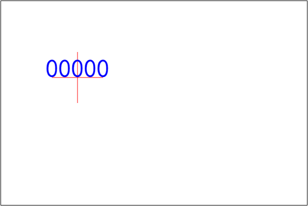
设置字体垂直对齐方式
语法: CanvasRenderingContext2D.textBaseline = value
描述:
- 该方法设置文字在垂直方向上的对齐方式.
- 该属性可以取值: top, middle, bottom, hanging, alphabetic, ideographic
- 基于参考点的直线, 其中 top, middle, buttom 分别表示靠上, 居中, 靠下对齐.
- alphabetic 表示字母基线, 类似于英文字母的对齐方式. 例如 a, g, f 等字母.
- ideographic 表意对齐. 使用字母对齐中超出的字母为参考. 即比字母基线略靠下.
- 所有的对齐方式是根据文字特点相关的. 对于中文主要使用的还是 top, bottom 和 middle.
top, middle, bottom 使用的较多
...
// ------------------
ctx.moveTo( 100, 80 );
ctx.lineTo( 500, 80 );
ctx.strokeStyle = 'red';
ctx.stroke();
ctx.font = '30px 黑体';
ctx.textBaseline = 'top';
ctx.fillText( 'abfghijklpqrty', 150, 80 );
// ------------------
ctx.translate( 0, 100 );
ctx.moveTo( 100, 80 );
ctx.lineTo( 500, 80 );
ctx.strokeStyle = 'red';
ctx.stroke();
ctx.font = '30px 黑体';
ctx.textBaseline = 'bottom';
ctx.fillText( 'abfghijklpqrty', 150, 80 );
// ------------------
ctx.translate( 0, 100 );
ctx.moveTo( 100, 80 );
ctx.lineTo( 500, 80 );
ctx.strokeStyle = 'red';
ctx.stroke();
ctx.font = '30px 黑体';
ctx.textBaseline = 'middle';
ctx.fillText( 'abfghijklpqrty', 150, 80 );
效果

alphabetic 表示字母参考线, ideographic 会比它低一点, hanging 表示悬挂.
ctx.moveTo( 100, 80 );
ctx.lineTo( 500, 80 );
ctx.strokeStyle = 'red';
ctx.stroke();
ctx.font = '30px 黑体';
ctx.textBaseline = 'alphabetic';
ctx.fillText( 'abfghijklpqrty', 150, 80 );
// -------------------------------------------------
ctx.translate( 0, 100 );
ctx.moveTo( 100, 80 );
ctx.lineTo( 500, 80 );
ctx.strokeStyle = 'red';
ctx.stroke();
ctx.font = '30px 黑体';
ctx.textBaseline = 'ideographic';
ctx.fillText( 'abfghijklpqrty', 150, 80 );
// -------------------------------------------------
ctx.translate( 0, 100 );
ctx.moveTo( 100, 80 );
ctx.lineTo( 500, 80 );
ctx.strokeStyle = 'red';
ctx.stroke();
ctx.font = '30px 黑体';
ctx.textBaseline = 'hanging';
ctx.fillText( 'abfghijklpqrty', 150, 80 );
效果
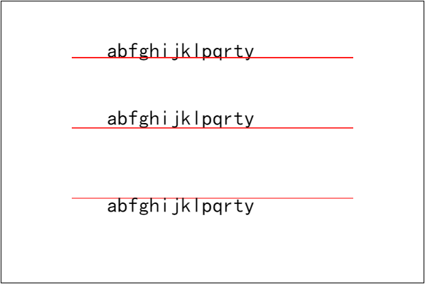
实际上大多数参考方式只有在特定语言中有作用, 而且与字体也有相对复杂的关系. 例如( 下图是有部分错误的 ):

绘制图片
绘制图像虽然只有一个 drawImage 函数, 但是该函数有多重参数形式.
CanvasRenderingContext2D.drawImage( img, dx, dy ).CanvasRenderingContext2D.drawImage( img, dx, dy, dWidth, dHeight ).CanvasRenderingContext2D.drawImage( img, sx, sy, sWidth, sHeight, dx, dy, dWidth, dHeight ).
绘制简单图像
语法: CanvasRenderingContext2D.drawImage( img, dx, dy )
描述:
- 使用三个参数, 允许在画布上的 任意位置 绘制图片.
- 参数 img 是指图片对象. 可以是 img 标签, 或者是 video 标签, 已经另一个 canvas 等.
- 需要注意的是如果直接添加 img 对象是不可以的, 需要等待其加载.
准备一张网络图片, 绘制, 便于查看其加载过程.
// 随便从百度中搜索 '美女头像', 记录一个链接地址
var url = 'https://ss1.bdstatic.com/70cFuXSh_Q1YnxGkpoWK1HF6hhy/it/u=3289155966,3850025949&fm=116&gp=0.jpg';
// 创建 img 对象
var img = new Image(); // 就是 img 标签
// 设置 src 属性为 图片
img.src = url;
// 绘图
ctx.drawImage( img, 100, 100 );
此时没有任何结果, 打开调试工具查看 Net Work

因为加载图片需要时间, 因此将绘制的方法放在 onload 事件中.
// 随便从百度中搜索 '美女头像', 记录一个链接地址
var url = 'https://ss1.bdstatic.com/70cFuXSh_Q1YnxGkpoWK1HF6hhy/it/u=3289155966,3850025949&fm=116&gp=0.jpg';
// 创建 img 对象
var img = new Image(); // 就是 img 标签
// 设置 src 属性为 图片
img.src = url;
// 绘图
img.onload = function () {
ctx.drawImage( img, 100, 100 );
};
修改后就可得到效果
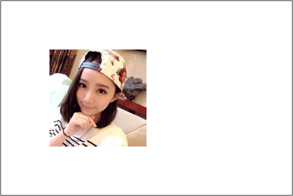
注意: 这里使用 new Image() 与 document.createElement( 'img' ) 是一样的.
在指定区域内绘制图像
当图片比较大的时候, 如果使用这样的方式绘图, 那么图片可能会完全覆盖画布. 例如:

因此, 需要将其控制在一个矩形区域内绘制.
语法: CanvasRenderingContext2D.drawImage( img, dx, dy, dWidth, dHeight )
描述:
- 参数 dWidth, dHeight 表示绘制的矩形区域. 绘制的 dx, dy 坐标决定了开始.
- 该方法绘制的图像会在指定范围内被压缩显示.
将上面的图绘制在 100 * 100 的范围内.
...
ctx.drawImage( img, 100, 100, 100, 100 );
效果
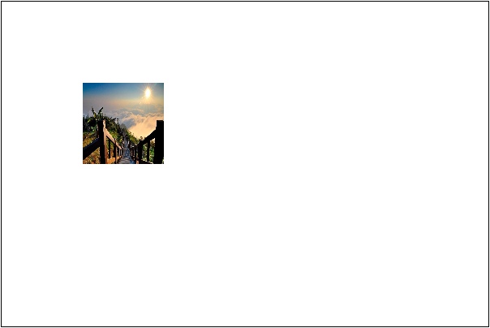
如果希望正常显示, 需要固定一个宽度或者高度, 然后根据比例计算出另一个值. 这里假定高度是 100. 计算宽度后绘图.
...
var heigth = 100, width;
img.onload = function () {
width = img.width * height / img.height;
ctx.drawImage( img, 100, 100, width, height );
};
效果

绘制任意图像
类似于 CSS 中处理按钮等小图标的技巧, 将很多的效果图集中在一张 png 格式的背景透明的图片中, 这样可以提高效率也便于维护. 那么 drawImage 同样支持该方式绘图. 在画布中的指定位子与指定区域内, 绘制图片中的某个矩形区.
语法: CanvasRenderingContext2D.drawImage( img, sx, sy, sWidth, sHeight, dx, dy, dWidth, dHeight )
描述: 这里的带有 s 前缀的参数就是指图源的矩形区域.
例如将图片的 ( 100, 100, 300, 200 ) 处的内容绘制到页面的 ( 100, 100, 300, 200 ) 的位置.
'''
ctx.drawImage( img, 100, 100, 300, 200, 100, 100, 300, 200 );
效果
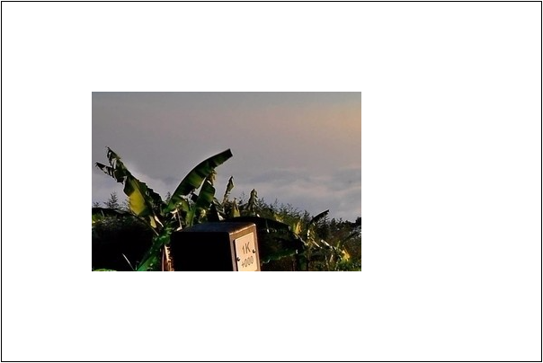
绘制动画
有了图片部分绘制的功能, 我们就可以尝试绘制动画了. 准备一张图片

然后开始的时候绘制第一行的第一张图. 计算它的坐标与宽高
var img = new Image();
img.src = './imgs士兵(1).png'
img.onload = function () {
var width = img.width / 4;
var height = img.heigth / 4;
// 第一张图的顶点是 0, 0, 宽高是 width, height
};
那么第一行的第二张图就是 ( 0, width, width, height ), 第三张就是 ( 0, width * 2, width, height ).
因此第一行的第 i 张图就是
var x = 0;
var y = width * ( i - 1 );
同理得到, 第 j 列的 x 坐标是 height * ( j - 1 )
现在绘制第一张图
...
var img = new Image();
img.src = './imgs/士兵(1).png'
img.onload = function () {
var width = img.width / 4;
var height = img.height / 4;
ctx.drawImage( img, 0, 0, width, height, 100, 100, width, height );
};
效果
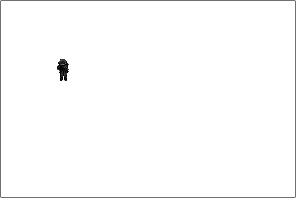;
现在要求, 每隔 200 毫秒就切换一张图片, 现在只考虑第一行的图片.
...
var img = new Image();
img.src = './imgs/士兵(1).png'
img.onload = function () {
var width = img.width / 4;
var height = img.height / 4;
var i = 0;
setInterval(function () {
ctx.clearRect( 0, 0, cas.width, cas.height );
ctx.drawImage( img, width * (i++ % 4), 0, width, height, 100, 100, width, height );
}, 200 );
};
效果

那么扩展一下, 把四行都画出来
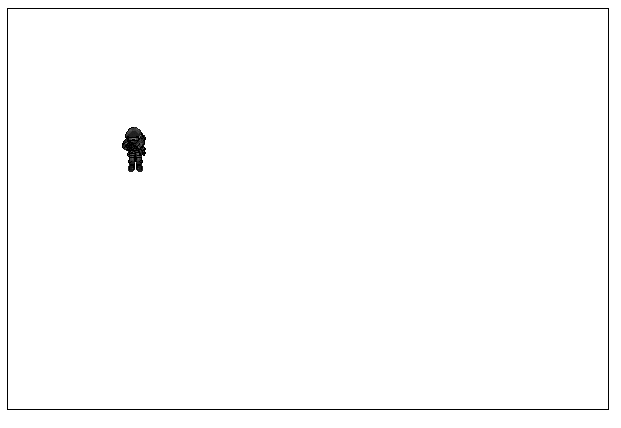
高级篇
变换
Canvas 绘图中支持矩阵变换功能. 其中涉及的常用方法有
CanvasRenderingContext2D.transform()CanvasRenderingContext2D.scale()CanvasRenderingContext2D.translate()CanvasRenderingContext2D.rotate()CanvasRenderingContext2D.setTransForm()
还有一些方法, 暂时没有普及与确定. 因此这里的几个方法才是最常用的方法.
什么是变换
计算机图形学是建立在解析几何基础之上的. 也就是说所有绘制的图形都是基于坐标进行计算得到的. 那么利用坐标系位置的调整, 同样的坐标可以得到不同的效果. 例如有一个点 A ( 10, 10 ). 可以在坐标系中绘制出该点.

如果调整坐标系. 比如将坐标系向右移动 10 个单位, 得到
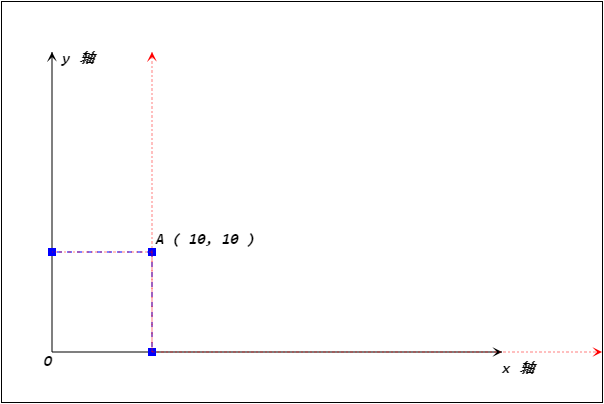
此时同样是 A 点, 坐标就变成了 ( 0, 10 ). 然后再把坐标系向上移动 10 个单位, 得到

那么针对新坐标系, 这个点的坐标就是 ( 0, 0 ). 这个就是坐标变换. 通过移动坐标的位置, 对坐标进行旋转, 以及对坐标轴数据的缩放, 从而使得原有点的坐标发生变化, 或利用原有的坐标点绘制新的效果.
坐标变换有一套完整的数学公式. 利用矩阵可以很容易的表示坐标的所有变换.

这里的 a, b, c, d, e, f 就刚好是 transform 函数的 参数.
- 其中 a 有时又标记为 m11. 它表示水平缩放.
- 其中 b 有时又标记为 m12. 它表示水平倾斜.
- 其中 c 有时又标记为 m21. 它表示垂直倾斜.
- 其中 d 有时又标记为 m22. 它表示垂直缩放.
- 其中 e 有时又标记为 dx. 它表示水平移动.
- 其中 f 有时又标记为 dy. 它表示垂直移动.
演示
...
ctx.transform( 1, 0, 0, 1, 0, 0 );
ctx.fillRect( 0, 0, 100, 100 );
效果

这里矩阵变换会比较复杂, 因此在使用中一般使用简单的, 平移, 旋转 和 缩放 的简单 api.
平移变换
平移变换就是将原有坐标轴进行平行移动, 那么坐标轴移动后就可以使用新坐标来绘制图形了.
语法: CanvasRenderingContext2D.translate( x, y )
描述:
- 该方法将坐标进行平移.
- x 表示水平移动, 正数向右, 负数向左.
- y 表示垂直移动, 正数向下, 负数向上.
- 变换可以重复调用, 变换是可以累加的.
使用该变换, 常常用于绘制不同位置, 但是形状重复的图形.
注意: 变换也会被 "继承", 开启新路径后依旧保留原先变换.
旋转变换
语法: CanvasRenderingContext2D.rotate( radian )
描述:
- 该方法将坐标轴进行旋转变换.
- 参数是弧度, 表示旋转的方式. 正数表示顺时针旋转, 负数表示逆时针旋转.
该变换常常用于实现旋转动画等.
缩放变换
语法: CanvasRenderingContext2D.scale( x, y )
描述:
- 该方法实现水平与垂直的缩放.
- 参数 x 控制水平缩放倍率. 传参 1 表示不作缩放, 传入大于 1 的数字表示扩大.
- 参数 y 控制垂直缩放倍率. 传参 1 表示不作缩放, 传入大于 1 的数字表示扩大.
该变换常常用于放大与缩小, 以及反转的效果.
环境
前面提到 Canvas 是含有状态的, 也就是说需要修改颜色, 直线样式, 绘图方式等效果时需要开启一个新的状态. 但是有时在绘制过程中需要修改状态, 同时绘制完当前状态后又需要回到之前的状态中继续绘制另外的形状. 那么只有再将修改过的样式载更改回来. 如果在该状态中修改的属性较多, 那么每次在回到之前状态时就有很多的代码.
Canvas 中引入了状态的保持机制. 使用 CanvasRenderingContext2D.save() 方法可以保存当前状态.
如果需要恢复到已经保存的状态, 只需要调用 CanvasRenderingContext2D.restore() 方法即可.
状态保持的机制是基于状态栈实现的. 也就是说 save 一次就存储一个状态. restore 一次就将刚刚存入的恢复. 如果 save 两次, 就需要 restore 两次, 才可以恢复到最先的状态.
一般在封装绘图的时候都会采用开始绘制之前, save 一次, 然后 开启一个新路径, 然后绘制结束后 restore, 然后再开启一个新路径. 这样保持当前状态不会对其他绘图代码构成影响.
优化
canvas 在绘制图片的时候, drawImage 方法还支持将一个 canvas 绘制到另一个 canvas 中. 因此使用该功能, 可以在内存中完成复杂的绘图, 将绘制好的半成品再绘制到 canvas 中合成需要的效果.
画布保存
画布在绘制后实际上就是一张图片, 可以直接右键另存为. 同时也支持使用 js 代码将其保存为 base64 编码的字符串.
语法: Canvas.ToDataURL( type, encoderOptions )
描述:
- 该方法可以将画布转换成 base64 格式的数据
- type 表示输出类型. 例如: image/png 或 image/jpeg 等
- encoderOptions 表示图片输出质量, 其取值在 0 到 1 之间. 如果是 1, 表示无损压缩, 必须使用 image/jpeg 或 image/webp 才起作用
...
<img id="img"/>
...
var img = document.getElementById( 'img' );
var cas = document.createElement( 'canvas' );
cas.width = 100, cas.height = 100;
var ctx = cas.getContext( '2d' );
ctx.fillStyle = 'pink';
ctx.fillRect( 0, 0, 100, 100 );
var data = cas.toDataURL( 'image/png', 1 );
img.src = data;
渐变和图案
绘制图像有两个主要方法, 一个是描边, 一个是填充. 前面介绍过要设置其样式, 可以使用 strokeStyle 和 fillStyle 属性,
只需要给它们提供颜色就可以了. 但是不仅仅是颜色, 它还支持渐变和重复.
相关方法
CanvasRenderingContext2D.createLinearGradient()CanvasRenderingContext2D.createRadialGradient()CanvasRenderingContext2D.createPattern()
线性渐变
语法: CanvasRenderingContext2D.createLinearGradient( x0, y0, x1, y1 )
描述:
- 该方法返回一个 CanvasGradient 对象. 用于描述渐变的方式.
- 该方法有两个参数, 用于表示线型渐变的方向与位置.
- 使用的时候, 首先创建一个 CanvasGradient 对象, 然后利用 addColorStop 方法添加颜色区间.
- 方法语法:
CanvasGradient.addColorStop( rate, color ). - 该方法用于设置在某个比例位置的颜色是什么. rate 的取值是 0 到 1 之间.
- 可以添加多个渐变点.
- 方法语法:
- 然后将该对象赋值给
*Style属性即可.
案例
...
var canvasGradient = ctx.createLinearGradient( 0, 25, 200, 25 );
canvasGradient.addColorStop( 0, 'blue' );
canvasGradient.addColorStop( 1, 'red' );
ctx.fillStyle = canvasGradient;
ctx.fillRect( 0, 100, 200, 50 );
效果
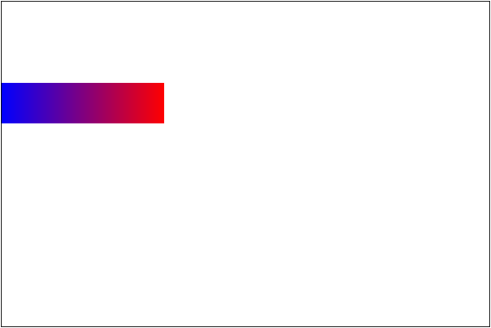
注意: 渐变点的坐标是基于坐标轴来计算的.
放射渐变
语法: CanvasRenderingContext2D.createRadialGradient( x0, y0, r0, x1, y1, r1 )
描述:
- 该方法实现放射渐变, 渐变的是在两个圆之间. 一般会使用两个内含关系的圆.
- 前三个参数分别表示其中一个圆的圆心的坐标, 以及半径.
- 后三个参数分别表示另一个圆的圆心的坐标, 以及半径.
- 绘制渐变效果用法与线性渐变一样.
案例
var x = cas.width / 2, y = cas.height / 2, r = 100;
var g = ctx.createRadialGradient( x + r * 2 / 3, y - r * 2 / 3, 0, x + r / 3, y - r / 3, r * 4 / 3 );
g.addColorStop( 0, '#fff' );
g.addColorStop( 1, '#f00' );
ctx.fillStyle = g;
ctx.arc( x, y, r, 0, 2 * Math.PI );
ctx.fill();
效果
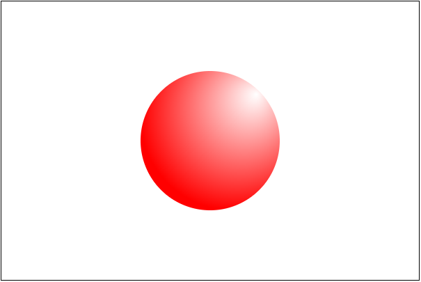
重复填充
语法: CanvasRenderingContext2D.createPattern( img, repetition )
描述:
- 该方法表示使用图片来填充的设置方法. 需要两个参数, 一个是图片, 一个是重复的方式.
- 图片允许是 img 标签, 图片, canvas 等对象
- 可选择的重复方式与 CSS 一致. 有: repeat, repeat-x, repeat-y, no-repeat.
- 如果是 空或"", 但不是 undefined, 默认就是 repeat.
准备一张图片

案例
var img = new Image();
img.src = 'imgs/04d91106ecb1ec84b6708cd9796fc772.jpg';
img.onload = function () {
var p = ctx.createPattern( img, 'repeat' );
ctx.fillStyle = p;
ctx.fillRect( 50, 50, 550, 350 );
};
效果
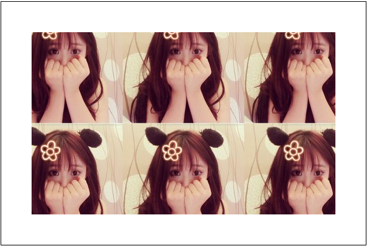
阴影
在 Canvas 中还可以给绘制的内容设置阴影. 但是一般不这么用, 因为性能不高.
相关属性:
CanvasRenderingContext2D.shadowBlur属性表示模糊程度.CanvasRenderingContext2D.shadowColor属性表示模糊颜色.CanvasRenderingContext2D.shadowOffsetX属性表示模糊位置 x 坐标偏移.CanvasRenderingContext2D.shadowOffsetY属性表示模糊位置 y 坐标偏移.